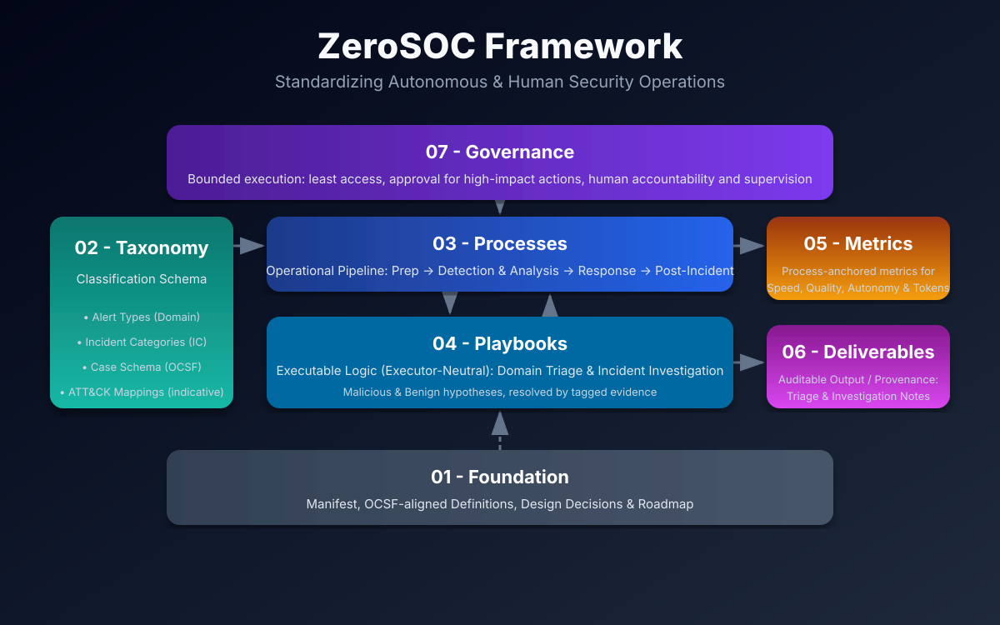
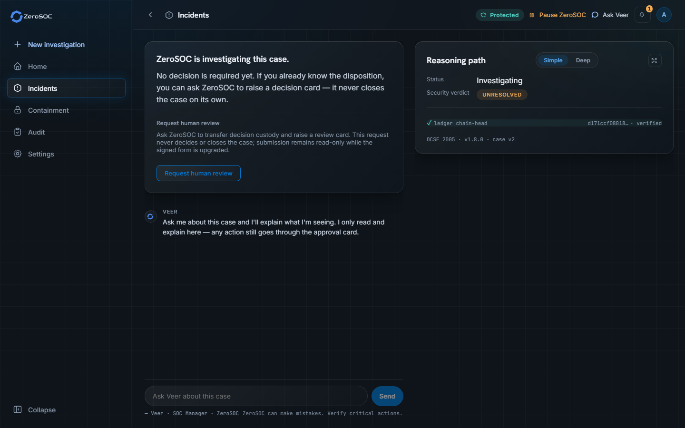
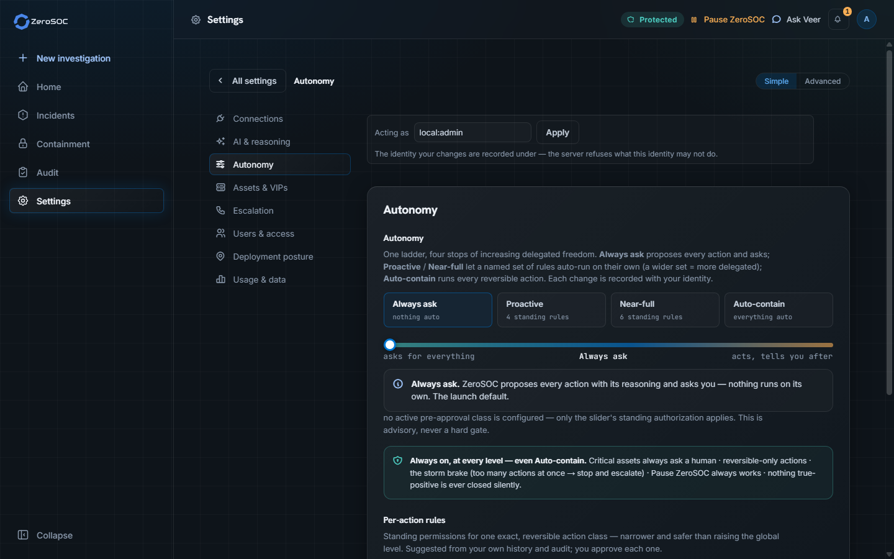

Democratizing Autonomous Defense
Traditional SOCs operate at human speed against AI-enabled adversaries attacking at machine speed. Proprietary AI SOCs cost fortunes and hide inside black boxes. ZeroSOC is the open ecosystem standardizing autonomous security operations for all.
An Open Working Draft for Practitioners
No single team or vendor has all the answers for autonomous security operations. The ZeroSOC project is an open working draft (v0.1) uniting specifications, agent reasoning skills, MCP tool servers, and runtime harnesses under transparent community governance. We invite practitioners and security leaders to critique, test, and co-develop with us.
Why SecOps Needs an Open Foundation
Modern security operations face structural challenges that proprietary black boxes fail to resolve.
Lack of Operational Standards
SecOps lacks universal operational semantics: different teams attribute conflicting meanings to basic concepts. Organizations constantly reinvent the wheel authoring siloed procedures from scratch. Deploying AI agents on unstandardized processes produces non-deterministic decisions and inconsistent execution.
Machine-Speed Adversaries
Adversaries increasingly automate reconnaissance, craft dynamic payloads, and compress dwell times to minutes. Manual triage operating at human speed cannot keep pace with automated attack chains.
Commercial Pricing Barriers
Proprietary "AI SOC" solutions attach luxury enterprise pricing floors, opaque data-ingest surcharges, and vendor lock-in, leaving most organizations unable to deploy modern SecOps automation.
Opaque "Black-Box" Automation
Closed AI platforms obscure their reasoning logic and prompt chains. Security teams cannot safely delegate containment actions without verifiable audit trails, inspectable evidence, and human supervision.
How the ZeroSOC Ecosystem Fits Together
The ZeroSOC initiative is organized into five focused open workstreams that connect specifications, agent reasoning, native security tools, runtime execution, and continuous empirical validation into a cohesive ecosystem.
The implementation-independent specification layer. Defines OCSF-aligned taxonomy, executor-neutral playbooks (Domain Triage & Incident Category investigations), G1–G5 measurement gates with precision and recall per gate, and open governance in Markdown.
Thin, reusable agentic reasoning routines enabling LLMs (Claude, Gemini, etc.) and custom agent harnesses to execute framework playbooks and enforce OCSF phase transition contracts.
Model Context Protocol (MCP) servers connecting AI agents directly to native security tools (Defender XDR, Sentinel, CrowdStrike, etc.) at the source of truth—eliminating the cost and complexity of copying telemetry into yet another centralized data lake or redundant pane of glass, with safe-by-default read/write isolation.
The open reference implementation and runtime engine, currently in development. It is designed around concurrent Malicious/Benign hypothesis investigations, evidence timeline graphing, safe execution sandboxes, and an analyst web console for glass-box reasoning visibility and operator control.
A planned evaluation substrate: real cloud infrastructure driving adversary emulations against real endpoints, scored against known ground truth — the only way to measure recall rather than estimate it. Whether this is built in the open, and what shape would be useful, is an open question for the working group.
The ZeroSOC Framework Architecture
The Framework provides the foundational body of knowledge structured into seven core modules and an auditable, NIST-aligned, 4-phase operational lifecycle.

Aspirational North Star, Pragmatic Reality
Autonomy is a continuum, not a binary switch. Real-world SecOps balances deterministic scripts for repetitive volume, AI agents for judgment under uncertainty, and human analysts for safety gates, ambiguous escalations, and accountability.
Executor Neutrality & Human Readability
"You can outsource thinking, but you cannot outsource understanding." Processes are independent of executor type—a human, script, or AI agent follows the exact same normative steps in clean Markdown.
Closed-Loop Continuous Feedback
Triage false-positives and post-incident root cause analyses feed directly back into detection engineering baselines and playbook updates, systematically eliminating alert rot.
The 4 Phases & 5 Measurement Gates
The operational pipeline standardizes 4 phases governed by 5 measurement gates (G1–G5) with explicit I/O contracts. Click any phase below to inspect its inputs, outputs, and functions.
Triage & Investigation
Objective & Roles
Fast, alert-centric triage that closes or promotes each Case, then an investigation that tests concurrent Malicious and Benign hypotheses to a scored verdict.
Inputs (Consumes)
- Alerts (OCSF 2004) aggregated into Cases (OCSF 2005); Signals are consulted, never triaged
- Enrichment: threat intelligence, CMDB, identity directory, SOC Knowledge Base
- Domain triage and Incident Category playbooks (04-Playbooks)
Outputs (Produces)
- G2: Case closed as False Positive, Benign or Duplicate, or promoted to Investigation
- G3: Case closed as False Positive, Benign, Duplicate or Insufficient Data, or Confirmed Incident (verdict_id 2) with its Incident Category
- Triage Note and Investigation Note: tagged findings, resolution and confidence
- A tuning ticket to Phase 1 for every False Positive
The ZeroSOC Platform
An open-source execution engine and analyst console designed for glass-box reasoning visibility, local perimeter execution, and strict human-in-the-loop control.

Glass-Box Investigation Tracing
Every query, LLM reasoning step, and concurrent Malicious/Benign hypothesis evaluation is recorded in a transparent, inspectable timeline for full auditability and regulatory compliance.

Operator Autonomy & Guardrails
Operators set the containment autonomy matrix: the action's reversibility, the asset's criticality and the Case confidence and severity decide which actions run pre-authorized and which wait for Human-in-the-Loop (HITL) approval.
Frequently Asked Questions
Addressing the hard questions and real skepticism regarding autonomous security operations.
No. We do not believe fully autonomous ("lights-out") SOCs are achievable or desirable today. ZeroSOC represents an aspirational north star to guide collective practitioner research and standardization.
In reality, mature SecOps is a hybrid continuum: deterministic automation for routine volume, AI agents for bounded hypothesis testing under uncertainty, and human analysts for safety gates, ambiguous escalations, and accountability.
This is one of the most critical open questions facing modern cybersecurity. Historically, practitioners developed intuition, tradecraft, and deep system understanding by spending years grinding through entry-level alert triage.
While the ZeroSOC North Star aims to replace repetitive manual analysis with autonomous operations, seasoned human SMEs remain essential for human-on-the-loop oversight, safety gates, detection engineering, threat modeling, and novel multi-stage incidents. If automated systems handle routine triage, the traditional apprenticeship model must evolve.
We believe future analysts will learn by auditing transparent reasoning traces, authoring open playbooks, and training in empirical cyber ranges—supervising and validating AI agents rather than performing repetitive manual lookups. We actively invite SecOps leaders, educators, and practitioners to join this community discussion to shape the future of cybersecurity career paths together.
Structure precedes autonomy. You cannot automate what you haven't standardized. Giving an AI agent access to production tools without formal taxonomy, explicit schema contracts, and normative playbooks leads to unpredictable hallucinations and inconsistent remediation — risking accidental business disruption on one side, or incomplete threat containment on the other.
The ZeroSOC Framework provides the foundational operational grammar: Karpathy's Law ("you can outsource thinking, but you cannot outsource understanding"), executor-neutral playbooks, and verifiable G1–G5 measurement gates.
Security through obscurity is not security. Relying on hidden, informal operational procedures leaves defenders with unvetted blind spots and untested assumptions.
Just as MITRE ATT&CK standardized adversary behaviors and Sigma standardized detection rules, open and peer-reviewed playbooks ensure that investigation hypotheses, evidence checks, and triage paths are intrinsically robust, auditable, and continuously validated against real attack simulations.
ZeroSOC follows an open-core licensing posture designed to maximize community adoption while defending the open runtime:
- Apache-2.0:
zerosoc-framework,zerosoc-skills,zerosoc-mcp, andzerosoc-cyber-rangeare permissively licensed so specifications, agent skills, tool servers, and benchmarks spread freely without friction. - AGPLv3:
zerosoc-platform(the reference execution engine) uses copyleft to ensure that downstream runtime improvements remain open to the entire community.
Unconstrained autonomy is dangerous. That is why ZeroSOC mandates safe-by-default tool separation (read tools strictly isolated from write/response tools), explicit autonomy sliders, and mandatory Human-in-the-Loop (HITL) approval gates for any non-reversible action.
Transparent reasoning logs and case-attributed audit trails ensure that teams maintain complete visibility and control over automated actions.
Contributions follow an open, issue-first workflow with transparent licensing and contributor provenance:
- Open an Issue / RFC First: Discuss proposals on GitHub to align on scope.
- Author & Format: Write Markdown playbooks, MCP tools, or cyber range scenarios using designated templates.
- Verify via Tabletop / Range: Validate actions empirically before promotion.
- Peer Review & Merge: Collaborate on GitHub pull requests under clear open-source licensing (Apache-2.0 / AGPLv3).
Partly, and the commits say so deliberately. Agentic coding tools drafted a good deal of the specifications and most of the tooling. If you spotted the stylistic tells, you read it correctly.
What never happens is unsupervised merging. No agent merges its own work. A human maintainer reads every change and is accountable for it. AI drafts, humans decide — the same boundary this framework asks of a SOC, and it would be incoherent to demand it of your analysts but not of ourselves. That is the first question on this page, applied to us.
AI-assisted contributions are welcome on one condition, which is the condition for all of them: someone with real security expertise has verified it is correct and valuable. Generated text is fluent by default, so a wrong answer is harder to catch. This project is not short of drafting speed. It is short of practitioner judgment.